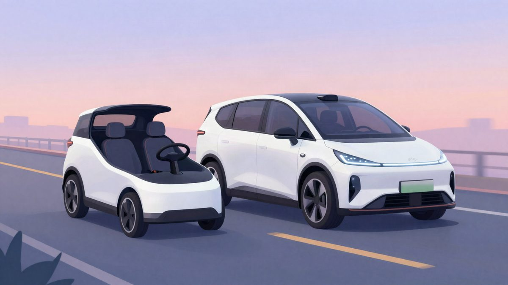

Tesla od drugog kvartala 2027. uvodi Model Y u roboTaxi flotu, a Cybercab bit će dostupan za kupnju do kraja godine

Tesla je najavila da će vlasnici Model Y od drugog kvartala 2027. moći uključiti svoje aute u roboTaxi flotu, i to samo u zonama u kojima već rade Teslina vozila. Cybercab bi do kraja ove godine trebao postati dostupan za kupnju vanjskim tvrtkama. Tesla u Austinu planira proizvoditi više od 125.000 Cybercabova godišnje.
Tesla planira od drugog kvartala iduće godine omogućiti vlasnicima Model Y da svoje aute uključe u njezinu flotu roboTaxija. Cybercab, bez volana i papučica, prema najavi bi do kraja ove godine trebao biti dostupan za kupnju vanjskim tvrtkama. Podatke su iznijeli čelnici Tesle na konferenciji o rezultatima za protekli kvartal.
Ashok Elluswamy, voditelj Teslina AI odjela, rekao je da tvrtka u drugom kvartalu iduće godine očekuje prva vozila klijenata u floti. Tesla će tada selektivno aktivirati punu verziju FSD-a na autima klijenata. Ta će vozila smjeti voziti u istim zonama nekoliko američkih gradova u kojima već rade Teslini roboTaxiji. Klijenti tako praktički iznajmljuju auto Tesli za rad u njezinoj usluzi i ne koriste ga u osobne svrhe s punim autopilotom.
Elluswamy je objasnio da Cybercab i Model Y koriste isti software. Vlasnici Model Y uskoro bi trebali dobiti istu verziju FSD-a v15 kao i Cybercab. Uvjet je da se klijentski Model Y koristi u sklopu Teslina autonomnog taksi parka i samo unutar zona odobrenih za rad. Popis zona postupno se širi. U Kaliforniji je rad Teslinih roboTaxija zbog lokalnih propisa dopušten samo uz vozača za volanom.
Elon Musk je rekao da će usluga roboTaxija u drugom kvartalu iduće godine početi imati vidljivu ulogu u prihodima kompanije, a njezin će udio rasti u trećem i četvrtom kvartalu. Potpredsjednik Lars Moravy izjavio je da Tesla Cybercab nastoji ponuditi klijentima do kraja ove godine. Kad je predstavila serijsku verziju Cybercaba, Tesla je već dopustila mogućnost prodaje takvih vozila u vlasništvo vanjskim tvrtkama.
Brojke i kvote
Tesla u Austinu planira godišnje proizvoditi više od 125.000 Cybercabova. Prema Musku, većinu flote i dalje će činiti auti u vlasništvu same Tesle, koji stalno voze kao taksi. U Teksasu je Tesla dobila dozvolu za 362 autonomna Modela Y. Do gornje granice te kvote mogla bi doći upravo uz aute privatnih vlasnika. U istoj državi može biti još 449 Cybercabova, a dio njih na kraju možda neće biti u vlasništvu Tesle. Od pokretanja Cybercaba u Austinu prošlog mjeseca broj tih vozila u floti porastao je deset puta, rekao je Musk.
Europa
Musk je dao i ambiciozniju prognozu: Tesla bi na kraju mogla prijeći većinu svih milja u putničkom prijevozu na Zemlji, u državama u kojima smije slobodno raditi. Prema njegovim riječima, Tesla je svoj FSD već certificirala za uporabu u nizu europskih zemalja i očekuje odobrenje na razini EU-a u idućih nekoliko mjeseci. Musk bi se, kaže, jako iznenadio da taj postupak potraje dulje od prvog kvartala iduće godine. Izvor ne navodi cijenu Cybercaba ni dostupnost roboTaxi usluge u Europi.
Izvor: 3DNews
Povezani članci
 Tesla pokrenula serijsku proizvodnju robota Optimus u Kaliforniji, cilj je 20.000 komada tjedno22. listopada 2026.
Tesla pokrenula serijsku proizvodnju robota Optimus u Kaliforniji, cilj je 20.000 komada tjedno22. listopada 2026. Tesla i SpaceX pod istim krovom? Analitičari procjenjuju vrijednost spajanja na 3,74 bilijuna dolara20. listopada 2026.
Tesla i SpaceX pod istim krovom? Analitičari procjenjuju vrijednost spajanja na 3,74 bilijuna dolara20. listopada 2026. Sam Altman je predložio tri modela nadzora nad AI-jem, uključujući međunarodni organ po uzoru na IAEA20. listopada 2026.
Sam Altman je predložio tri modela nadzora nad AI-jem, uključujući međunarodni organ po uzoru na IAEA20. listopada 2026.